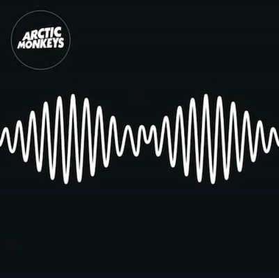
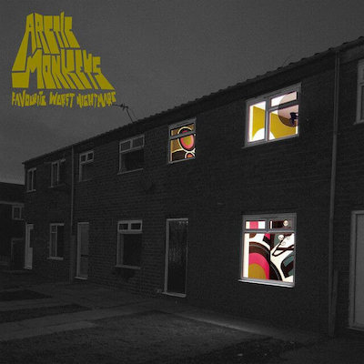
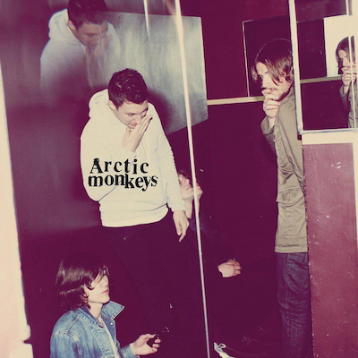
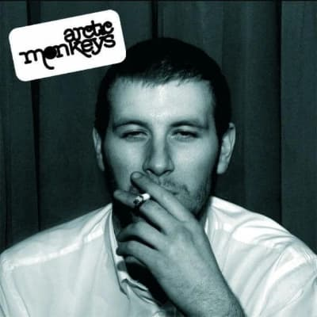
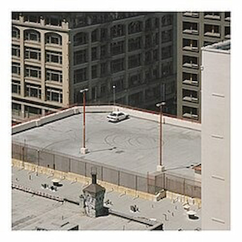
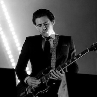

Arctic Monkeys is an alternative rock band formed in Sheffield, South Yorkshire, England in 2002 after meeting at Stocksbridge High School. The band consists of Alex Turner (vocals, guitar, piano), Jamie Cook (guitar), Nick O'Malley (backing vocals, bass) and Matt Helders (drums, vocals). Founding bassist Andy Nicholson left in 2006. They are one of the first bands to come to public attention via the Internet via MySpace, despite none of them having an account. Their rise to success started in late 2004/early 2005 when demo songs that had been handed out in CD form at gigs found their way onto the internet. These demos rapidly spread among message boards and friends leading to a growing fan base for the band, and were collected on the unofficial Beneath the Boardwalk, which the band recognizes on their website. The band owe much of their success to viral buzz via the Internet, and have eschewed typical 'commercial' channels, including refusing to appear on the UK's (now discontinued) Top Of The Pops music program, which was often seen as a gateway to success.





Formed in the early 2000s, the band’s origins begin with a neighborhood. Both Turner and Helders were close friends and neighbors and the two later met Nicholson in secondary school. Turner grew up in a musical household and his father was a music teacher. Early on Turner played guitar, including in an instrumental band with Helders, who played drums. Nicholson played bass. Guitarist Jamie cook was also a member. The name Arctic Monkeys was Cook’s idea and is likely a play on the term “northern monkey,” which is a derogatory term for someone from northern England. But the members embraced it just as they embraced their roots and soon the name stuck and has helped earn them fame. Monkeys? From the Arctic? What could that possibly mean? This is likely the thought process many music fans go through when considering the group for the first time. It’s the kind of slightly opened window that can make for a delightful entry to a new sound. And it’s worked. As far as the band itself, at first, Turner was reluctant to be the lead singer. But, according to Helders, Turner had a “thing for words” and was convinced given his talents and skill as a frontman, lyricist, and lead singer. The group later played its first gig on June 13, 2003, at The Grapes in Sheffield City Centre. They began to record demos soon thereafter at 2fly studios in Sheffield. Some 18 songs were tracked and those birthed the collection, Beneath the Boardwalk. It was burned onto CDs and given away at shows, which were then uploaded to the internet and shared via popular file-sharing platforms.
